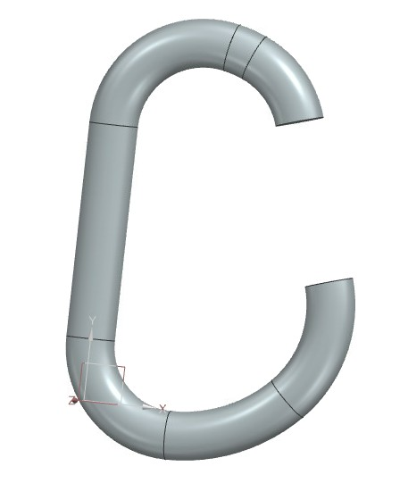
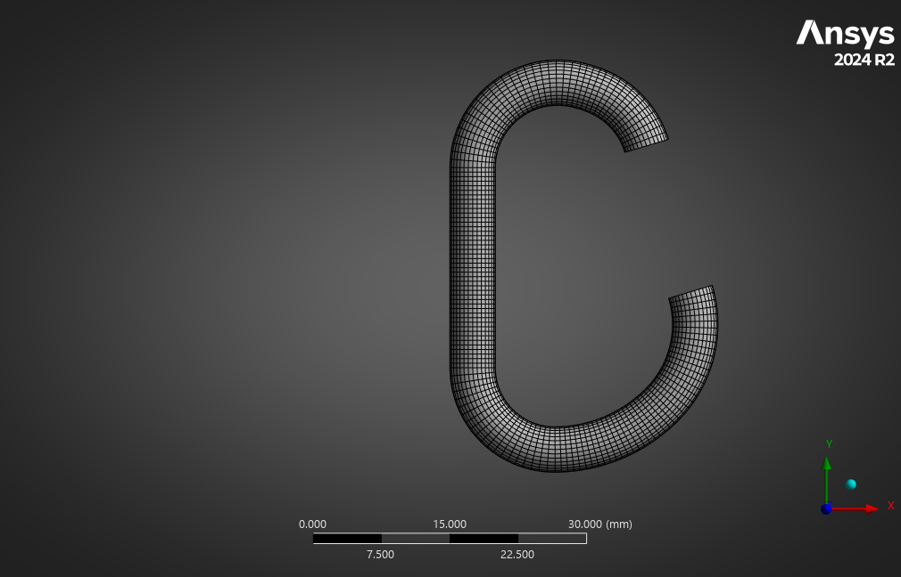
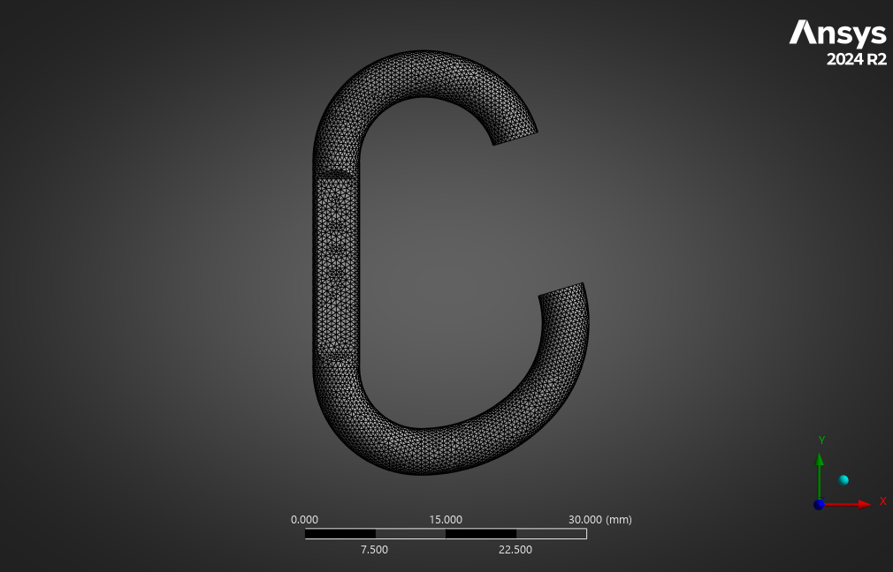
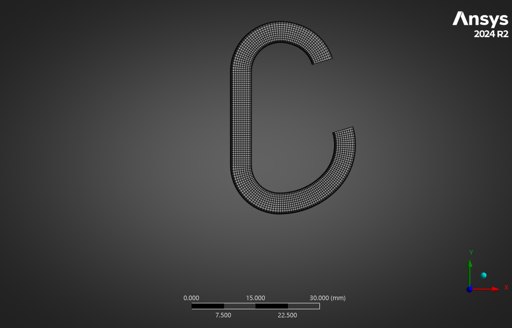

Project Overview
Final project for ME 424 (Finite Element Analysis) at Oregon State University. I used Siemens NX and Ansys to compare three geometric variations of a D-shaped pocket carabiner used to hang small bags, examining stress, deflection, and volume under a 360 N (approximately 81 lbf) load.
Problem Statement
The hypothesis was that selectively removing material from the spine would reduce volume with a smaller stress penalty than thinning the whole tube. The model used assumed Aluminum 7075 properties, including a 503 MPa tensile yield strength.
Methodology
- Modeled a D-shaped pocket carabiner in Siemens NX and imported into Ansys for FEA
- Conducted mesh convergence analysis using curvature capture, selecting a 0.5 mm element size from the initial-load refinement study
- Applied a fixed boundary condition at the top and a 360 N tensile load at the bottom across three design variations
- Evaluated three designs: Standard, Reduced Spine (spine cross-section flattened), and Whole Tube Reduced (full tube cross-section reduced)
- Compared maximum von Mises stress, maximum deflection, and volume across all variations
- Compared the peak-stress increase per unit of removed volume to assess the two material-removal strategies
Material: Aluminum 7075 — E = 71.7 GPa, ν = 0.33, Tensile Yield Strength = 503 MPa
Results



- Volume
- 1734.4 mm³Baseline
- Peak von Mises Stress
- 349.82 MPaBaseline
- Max Deflection
- 1.63 mmBaseline
Illustrative geometry transitions—not Ansys playback. The reduced spine retains its lateral outline and highlights front-face flattening; face depth and whole-tube width changes are not dimensionally exact. Numbers are the report’s final comparison results under its stated 360 N load; the mesh images show geometry only. This bag-hanger study is not a climbing or life-safety rating.
| Variation | Max Deflection (mm) | Max von Mises Stress (MPa) | Volume (mm³) |
|---|---|---|---|
| Standard | 1.63 | 349.82 | 1734.4 |
| Reduced Spine | 1.79 | 358.76 | 1627.8 |
| Whole Tube Reduced | 1.94 | 416.18 | 1251.5 |
Stress Penalty per Removed Volume (MPa/mm³)
- Reduced Spine: ≈0.084 MPa/mm³
- Whole Tube Reduced: ≈0.137 MPa/mm³
This comparison metric divides the increase in peak stress by the volume removed from the baseline. A lower value favors less added stress per unit of removed material within this study.
All three variations remained below the assumed yield strength of Aluminum 7075 in the modeled loading condition. This is a consumer bag hanger study, not a climbing or life-safety certification. The Reduced Spine design lowered volume by 106.6 mm³ with an approximately 9 MPa stress increase, while the Whole Tube Reduced design produced an approximately 66 MPa increase.
Key Findings
- Of the compared alternatives, selective spine removal produced the lower peak-stress penalty per unit of removed volume
- Thinning the whole tube increased peak stress more strongly at the critical bend regions
- Deflection increased across both reduced-volume variations; the largest change from the baseline was 0.31 mm
- Stress concentrations occurred at the spine-to-hook transition bends in the modeled load case
Model Limitations
Aluminum 7075 properties were assumed rather than verified for the physical product. The connection/gate interaction was not modeled, and the report’s mesh study used an initial loading condition different from the final comparison. The study supports a relative geometry comparison; further validation is needed for physical performance claims.
Tools Used
- Siemens NX — 3D CAD modeling
- Ansys Mechanical — FEA, mesh convergence, von Mises stress and deflection analysis
- MatWeb — Material property reference for Aluminum 7075